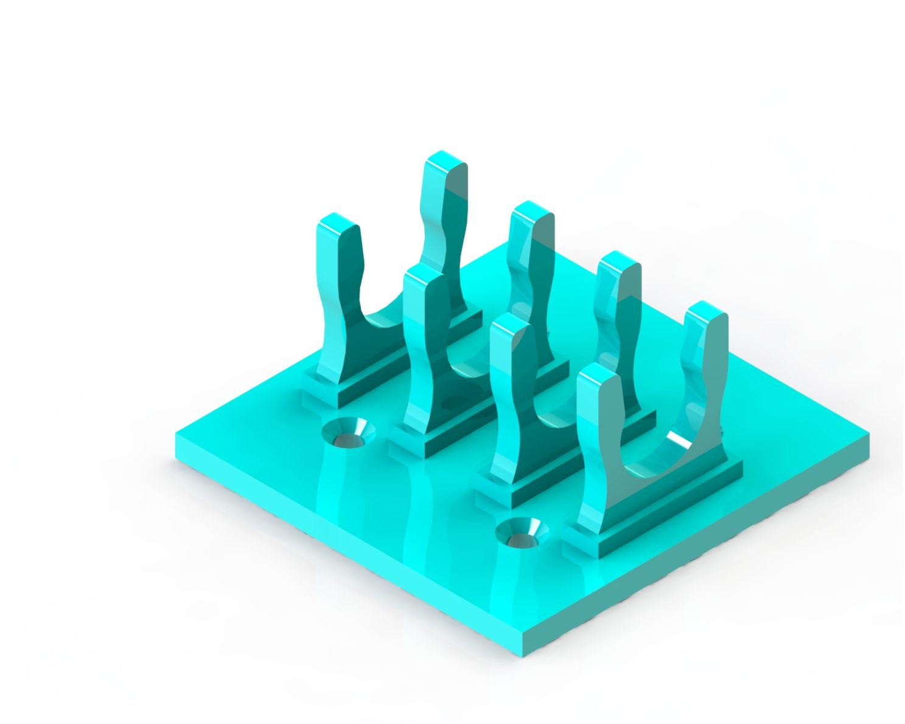
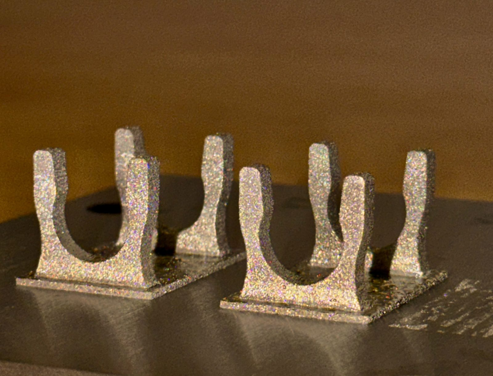

Work / Project 3 of 5
Surfaces that grip on command
Superelastic and active interlocking metasurfaces, developed with Sandia National Laboratories. Two printed faces that lock to each other, and release when heated.
- Alloy
- Superelastic NiTi
- Partner
- Sandia National Laboratories
- Methods
- FEA, DIC, LPBF
- My role
- Design and validation
- Published
- Materials Today, 2026 and Materials & Design, 2024


An interlocking metasurface is a pair of printed faces whose features engage like a mechanical hook and loop. Make them from a shape memory alloy and the engagement itself becomes switchable: high locking force at one temperature, release at another, repeatably.
My part was design and validation. I built the FEA that predicted the locking and release behaviour, then checked it against digital image correlation on the real parts, so the measured strain field could be laid over the predicted one rather than described next to it. What matters for a device is not the first lock but the hundredth, so cyclic stability was the acceptance test.
Two papers came out of this line of work: active interlocking metasurfaces in Materials & Design (2024), and superelastic interlocking metasurfaces in Materials Today (2026).
Read the Materials Today paper
Read the Materials & Design paper